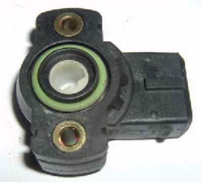

The TPS is a small black plastic item that sits on the right hand side of the right throttle body. To get at it properly, the fuel tank and airbox must be removed. It's purpose is to tell the ECU the position of the throttle butterflies
Message from JohnnyO
Back in September of 2005, I received an email from JohnnyO, the body of which follows:-
".. just thought I'd mention that we have had three Tornado 903's that have had the TPS fail; it always happened when the bike was ridden in the rain."
"With my electronic test equipment connected, it showed the ECU was reading, at idle rpm, that the throttle was constantly varying between 5% & 50% opening, obviously the ECU would be pumping in enough fuel for these throttle openings, well with the twist grip closed during idle and no matching quantity of air getting in, the bikes was running incredibly rich and will in the space of 5 to 10 minutes, foul the plugs."
"When the TPS has failed, prior to cutting out and not restarting, the idle (or constant throttle) rpm will flunctuate with black smoke coming out of the exhaust."
"I guess if you read the signs quick enough, you could try keeping the throttle open more than half or as much as you can (that'd be scary on a wet road) to get you home before the plugs foul."
"I guess if you ride in the rain, it would pay to get some sealer (or maybe even some water repellent spray) on to the TPS. I would hate to see you standing on the side of the road in the pouring rain."
"Even once the bike has dried out, the TPS didn't come back, I'm not sure if the water got into the TPS causing it to short-out or whether it got into the wiring somewhere causing it to fail; any bike we have since put sealer around the TPS has not had the problem but as I said, we have only had three bikes fail with this problem, so it is not a common problem."
TPS Removal
"If you want to remove the TPS (you shouldn't need to just to seal it) you will need a small phillips head screwdriver with a 90 degree bend in it, or else the throttle bodies will have to come off. If you take the throttle bodies off, have 3 new 'O' rings ready to put back on the throttle bodies, as they become dislocated and wont go back in place, because the fuel would have made them swell."
TPS Replacement - courtesy of colintornado - Benelliforum 26 Jan 10
Benelli part no is ..R180137000000Or more specifically -
318i (91-98), 323i (98), 325i (92-93), 325i (94-95);
used on the primary throttle on models:-
328i (96-98), 525i (91-93);
used on models without traction control:-
528i (97-98), 530i (94-95), 540i (94-95), 540i (97-98), 740i (93-98), 840i (94-97), M3 (95-98) and Z3 (96-98)